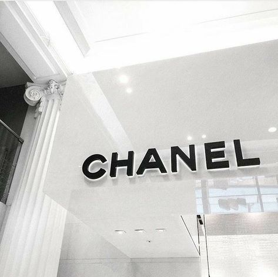
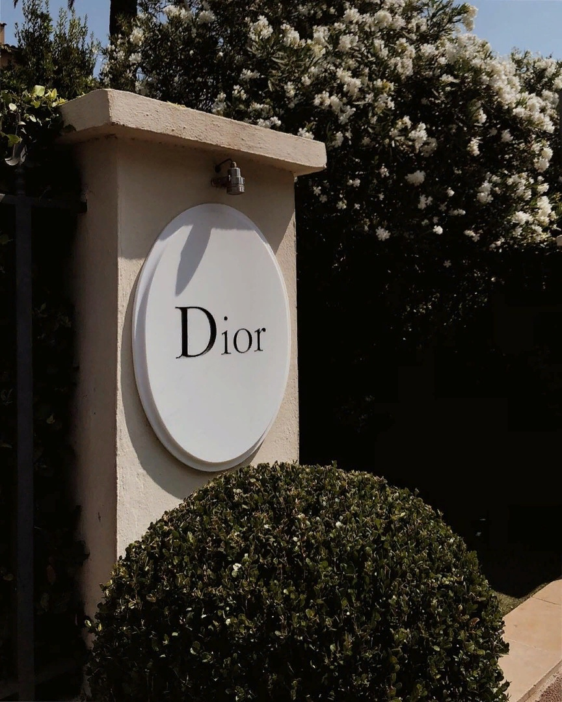
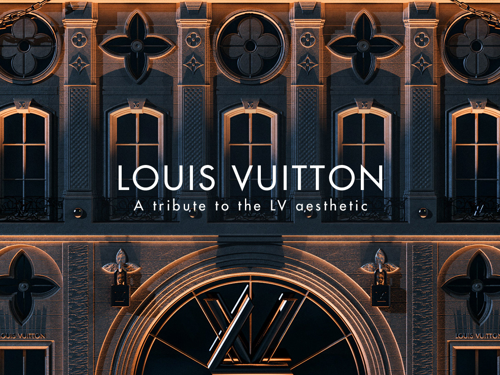
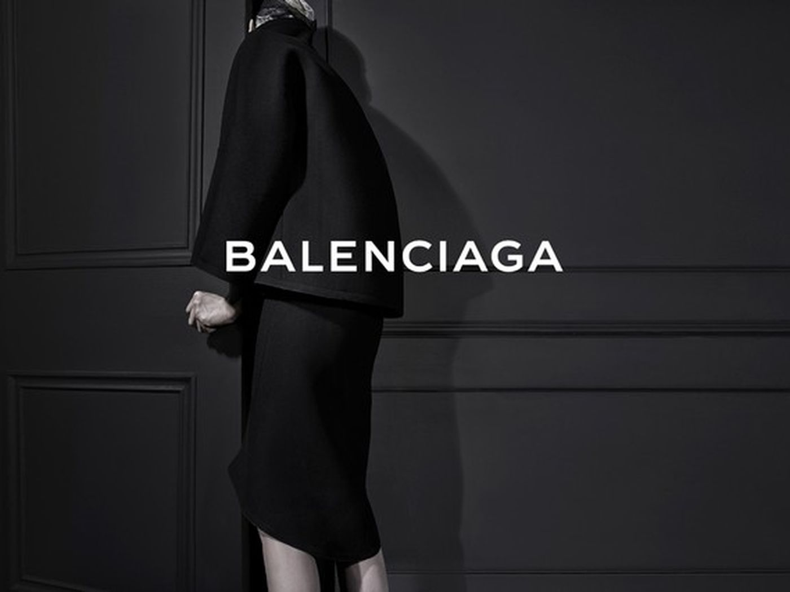
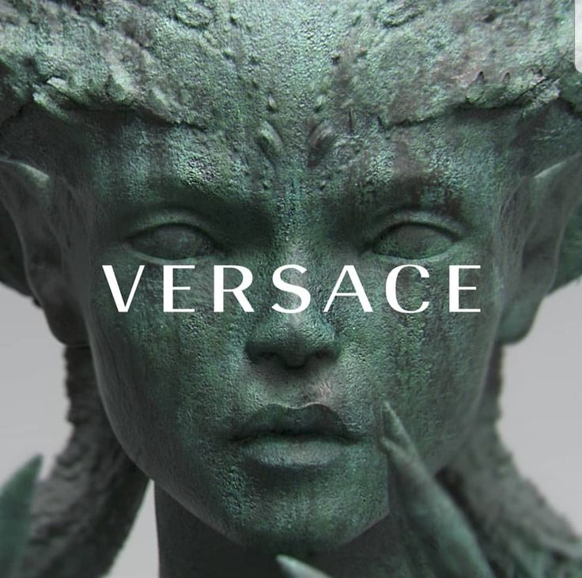

Бренды
10 самых популярных марок одежды класса люкс в России
- Gucci
- Chanel
- Armani
- Dior
- Michael Kors
- Louis Vuitton
- Dolce&Gabbana
- Balenciaga
- Givenchy
- Versace
Gucci
Кем и когда основан: Годом рождения Gucci считается 1921-й. Итальянский дизайнер Гуччио Гуччи открывает небольшой магазинчик, где продает чемоданы и одежду для жокеев. Отношения с конями длятся недолго — уже через 10 лет бренд переключается на более интересную публику. А на память о первом бизнесе остаются лишь знаменитые красно-зеленые полосы. Дело в том, что ремнями подобной расцветки когда-то закрепляли седло на лошади, а теперь украшают сумки и обувь. О бренде сегодня: Gucci сегодня по-прежнему предан традициям. Вип-бренд любят за цветочный принт Flor, созданный в честь принцессы Монако Грейс Келли. Никуда не ушли двойные полоски и сумки с бамбуковой ручкой годов войны. Gucci — это изысканность и роскошь вне времени и вне бюджета обычной женщины тоже. 170 000 ₽ за самую простую сумку с логотипом. Умножьте эту сумму на два и вы получите цену свитшота из лимитированной испанской коллекции. Gucci создает одежду для эффектных покупателей и иногда пытается их удивить. В 2015 году, например, появилась целая серия сумок из Токио, Нью-Йорка, Рима, Лондона. А совсем недавно модный дом выпустил из своих дверей мужчин в платьях.
Chanel
Кем и когда основан: Коко Шанель искала себя 36 лет. Она могла стать певицей, но карьера не сложилась. Девушка претендовала на роль богемной шляпницы, да бизнес был маловат. Модная ниша казалась ей слишком занятой, но, рискнув, она не прогадала. В прошлом году весь мир отмечал 100-летний юбилей модного дома Chanel. Ровно столько времени понадобилось дизайнеру, чтобы выкинуть все старье из нашего гардероба. На плечики Коко повесила сарафаны из ткани для мужских трусов, маленькое черное платье, плиссированные юбки и жакеты из твида. На прикроватном столике теперь стояли миниатюрные флакончики Chanel №5 и красовались украшения-трансформеры. О бренде сегодня: После смерти основательницы бренд поддерживает старые традиции. Маленькое черное платьице, твидовые костюмы и парфюмерия — по-прежнему хиты Chanel. Но эти вещички могут позволить себе только аристократки. От 500 000₽ за топик на лето — как вам? Бренд не слишком гонится за модой, все вещи классические — спокойных оттенков и приличной длины. Поэтому если не успеете накопить на обновки в этом году, в следующем купите почти то же самое. Помимо одежды, появились также новые линейки — очки, спортивные аксессуары, часы и косметика.
Armani
Armani Кем и когда основан: Мало кто знает, но Armani появился благодаря Volkswagen. В семидесятых итальянцу Джорджо Армани было уже 40 лет. К этому возрасту он успел поработать мерчендайзером, фотографом, закупщиком одежды, а успеха так и не добился. Вторые роли мужчине не подходили, и тогда он решил стать эталоном стиля модной примой. Армани продает свой автомобиль марки Volkswagen и в 75-м году открывает магазин мужской и женской одежды. О бренде сегодня: Внутри модного дома Armani никогда не было революций. 45 лет на престоле находится неповторимый Джорджо Армани. Этот итальянец знает, чего хотят мужчины. Он улучшил квадратный костюм, убрав из него подплечники. Привычные черные цвета он заменил на всю палитру радуги. И хотя в коллекциях прет-а-порте всегда есть женские вещи, настоящие хиты прячутся в мужском отделе. Цена в разных линейках отличается. За черный смокинг в Emporio Armani вы заплатите 101 000₽, в Giorgio Armani – 247 000₽.
Dior
Кем и когда основан: Основатель модного дома Dior никогда не руководил своим детищем. Его не волновали бумажки и отчеты, зато привлекала стилистика и одежда. Уже в первой коллекции New Look дизайнер удивил парижан. Кристиан Диор выпустил на подиум моделей, в прямом смысле слова, закованных в юбки. С помощью узкого белья он утянул талию, а подол, наоборот, расклешил. Так грациозно дизайнер сообщил о том, что с 47-го года в мире будут только женщины-цветки, а он – главным ботаником. О бренде сегодня: Кристиан Диор работал в компании недолго – всего 10 лет. После его смерти французский модный дом сменил целых 7 дизайнеров. Пробовали разные концепции и стили – до тех пор, пока у руля не встала хрупкая итальянка Мария Грация Кьюри. Дизайнер заявила, что женщина Dior – это по-прежнему изящество и красивый цветок, но теперь еще и с шипами. В последних коллекциях бренда представлены пышные прозрачные юбки, просвечивающие блузки с декольте, а также социально-активные футболки. Dior даже установил цену такой моды. За дизайн с принтом «Мы все должны быть феминистками» бренд просит 60 000₽.
Michael Kors
Кем и когда основан: Любовь к моде перешла к Майклу Корс по наследству. Мама была моделью и сотрудничала с компанией Revlon. А сам дизайнер уже с 19 лет шил одежду для элитных магазинчиков. Когда работать на чужого дядю надоело, американец создал собственный именной бренд. В этом году мы празднуем юбилей – 20 лет мировой популярности Michael Kors. О бренде сегодня: Майкл Корс производит одежду вне возраста. Бабушки, студентки, взрослые женщины ‒ все это аудитория бренда. Модный дом позиционирует себя универсальным, поэтому в основном выпускает классику ‒ наряды в черных и белых цветах. Принты создают не вычурные. А в последнее время Michael Kors стирает границу даже между стилями и создает больше спортивных коллекций. По мнению дизайнера, сексуальность и гламур теперь не в тренде. Современные женщины слишком уверены в себе, чтобы выставлять тело на показ. Однако главная фишка бренда ‒ аксессуары. Сумочка, кошелек, часы, сережки ‒ если вы купили их в Michael Kors, то это определенно хит. Серебряный браслет с фирменной эмблемой обойдется вам примерно в 18 000₽.
Louis Vuitton
Кем и когда основан: Луи Виттон ‒ человек, который прошел жизнь с чемоданчиком в руках. Он нес багаж, когда в 16 лет пришел пешком в Париж. До 33-х он проработал помощником в местном сундучном ателье. А в 1858-м году вся Франция выстроилась в очередь за серым дизайнерским чемоданчиком. Это была первая работа дизайнера и первая в мире дорожная сумка с плоским верхом и низом. На ней еще не было знаменитых LV, но это уже был фирменный стиль Louis Vuitton. О бренде сегодня: Сам Луи Виттон делал ставку только на изготовление чемоданов. Вместе с братом он придумал надежный пружинный замок, изобрел революционную сумку-ведро и отделы для хранения внутри багажа. Бренд долго оставался дорожным, пока Марк Джейкобс в 97-м году не расширил его до модно-одежного. Louis Vuitton выпускает не очень современные коллекции. Сейчас на сайте продают матроски, длинные платья-рубашки и пуловеры на пуговицах. Главная ценность и эксклюзив модного дома ‒ все еще брендовые чемоданы. Что по цене? 216 000₽ ‒ за последнюю модель Horizon 55 в знаменитой коричневой расцветке.
Dolce&Gabbana
Кем и когда основан: Этот модный дом построили два итальянца. Один был родом из Сицилии, другой – из Милана. Долче и Габана работали вместе в одном ателье, а в 82-м году решили открыть собственное дело. Первый показ прошел в кафе и был не очень удачным. Но уже через 3 года мужчины сумели шокировать Италию. Они создали коллекцию Real Woman для красавиц с немодельной внешностью. И это в то время, когда в мире правила скучная и консервативная мода. О бренде сегодня: Сегодня Dolce & Gabbana по-прежнему управляют его основатели. Они ввели в моду платье-бюстье, порванные джинсы и костюм на голое тело. Также в далеком 96-м дизайнеры полюбили анималистику и до сих пор остаются ей преданы. Фишка последних двух сезонов – сицилийские джунгли. Модели ходят по подиуму в фруктовых платьях-макси, кроп-топах с зебрами и в тигровых шортах. А разбавляют экзотический лес провокационные черные платья, уже ставшие визитной карточкой бренда. Цена класса люкс – не меньше 100 000₽ за платье с аргентинским туканом.
Balenciaga
Кем и когда основан: Balenciaga — старичок в мире моды. Бренд появился 106 лет назад благодаря экстравагантному испанцу Кристобалю Баленсиаге. Дизайнер был любителем всего необычного — юбка-шар, геометрическое пальто-квадрат, рукав-браслет. Но из-за того, что консервативные красотки того времени не покупали работы кутюрье, про модный дом надолго забыли. О бренде сегодня: Второе дыхание бренду подарил Демна Гвасалия. Появившись на пороге Balenciaga 5 лет назад, он сделал одежду еще более андеграундной, чем раньше. “Уродливое” сочетание цветов, логомания, невероятные объемы и прочий гранж — фишка Balenciaga. Цены класса оверлюкс, зато гарантируют, что такие вещи вы больше нигде не найдете. За знаменитую кожаную вип сумку Hello Kitty бренд предлагает отдать 147 000₽.
Givenchy
Кем и когда основан: За 10 лет до выхода фильма «Завтрак у Тиффани», недалеко от парижской Триумфальной арки появился маленький магазинчик. В нем молодой амбициозный француз Юбер воплощал свою мечту ‒ изменить мир моды. Он придумал блузку Bettina с бело-черными воланами на рукавах и платье-рубаху свободного кроя. Но самым известным его творением было маленькое черное платье. Кто бы мог подумать, что благодаря Холли Голайтли в 61-м году о Givenchy узнает весь мир. О бренде сегодня: Юбер де Живанши любил повторять, что простой и изящный черный ‒ его любимый цвет. Коллекции часто были монохромными, чего не скажешь о современном Givenchy. Последние 3 года брендом управляет британка Клэр Уэйт Келлер. Дизайнер пытается объединить английско-французский стиль. В своей последней коллекции она вдохновилась садами британского замка Сисингхерст. Модели демонстрировали фиалковые пышные юбки, ирисовые платья и гипсофиловые костюмы. Из старого в модном доме остались только знаменитое черное платьице и люксовые цены. 560 000₽ за повседневный наряд Givenchy — норма.
Versace
Кем и когда основан: Джанни Версаче был настоящим счастливчиком. Работая подмастерье в самом бедном городке Италии, он изменил жизнь всего за один день. Юноше позвонили из Милана и пригласили на работу в крупную компанию Florentine Flowers. Бизнесменам понравились его моделирование и первые платья в семейном ателье и, сами того не зная, они сопроводили кутюрье в мир высокой моды. Уже через 6 лет дизайнер выпустил первую самостоятельную коммерческую коллекцию под скромной фамилией — Versace. О бренде сегодня: Последние 23 года во главе модного дома стоит сестра основателя — Донателла Версаче. Старушка поддерживает сексуальную философию бренда. На весеннем показе этого года модели появились в платьях с открытыми плечами — 101 000₽, мини-юбках с бахромой — 57 000₽ и рокерских кожаных пиджаках — 220 000₽

Российская федерация
Как с нами связатся?
Почта: mari_skl1212@mail.ru
VK: mariakhdkv
inst: mariakhdkv